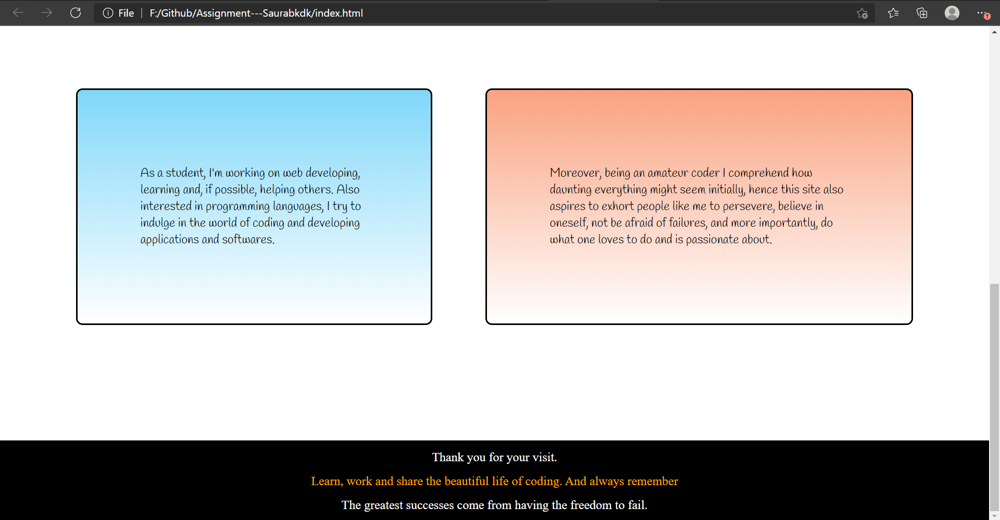

Kdk
Site report
I have learned coding before, and even now I am trying to do so from any free resource I come across. However, most of my learning has involved Back end programming which I love to unless something comes up that I just can't comprehend. Anyways, coding is my cup of tea. That said, web developing or web designing hasn't always been so kind to me. I had tried learning web designing during my high school year, but I just couldn't wrap my head around it. Perhaps because during school time it was a lot to take in or more plausibly I was not persistent enough. Nonetheless, my time in learning web developing and designing now say things otherwise.
Honestly, when we started with web developing, I was both excited and afraid given my history with it or more precisely with designing. One difference though, this time I was willing to learn and work. This time I tried to be meticulous in whatever we learned and what our tutor taught us. And I don't know this time it just clicked. Everything that I was confused about before or didn't understand started to look right. Certainly because this time I was adamant to learn rather than trying to deceive myself and it seems as if it is paying off, slowly but steadily. I have been practicing as much as I can, from college materials and even from external resources. Yet, I have to be honest I am no way near perfect but I am far better now than I was years ago when I merely understood things. I can talk about 'div' tag for instance. Something that I just couldn't get in my head, particularly when there were nested ones but something that I can work with now with convenience. Padding and margin sometimes can be a mess nevertheless are vital for design. I have failed inumerable times learning and working with these things, and that is how I eventually learned. Float, flex now seems a lot more intriguing. And I can say so with every property that I have learned but make no mistake by only failing first. Now with proper use of properties in CSS, I can create things myself. Working with html has never been this captivating. Debugging, however, is a headache as I have had to spend much of time just figuring out where I went wrong, and yet that comes as one of the most interesting part of this study. One new thing we learned in this module, Github, is really fascinating. I still have a lot to learn but it seems as we progress with the course, it will come as a blessing.
Hence, my experience of learning the basics of web development, coding, design and debugging process has been really helpful, illuminating and instructional. I have succeeded to learn and comprehend things that at a time I felt impossibly intricate. And I am willing to learn and grasp knowledge as much as I possibly can.
Journey of development of the site
Home (index.html)
So, this is the first page of the site. The home page. Frankly, when designing my home page I did have a layout in my mind, but when it comes to implementation things don't always go as planned. So I came up with what I have now. The home and all the sites use consistent grid layout with the assist of display property.
Let's start with the header. The header contains a navigation bar which is made responsive for the mobile phone users which we will be discusssing later in the report, and it also consists of a name for the website. I would have loved it to be an icon there, but I don't have one, so I went with what I thought might look good. Float property was used to make the items in the bar float horizontally, and with some adjustments in padding and margin the contents in the header were made to look as seen in the site itself. With regard to the color and font that I decided to use in the header, it was based on what type of design would I have gone for the main(name for the division)division that followed subsequently. For instance nav used an image initially and later on only color so that it would complement the main div and page itself. Moreover, at the end stages of home page I actually had to decide between two designs for nav bar and main div that I thought might look good which will take us to our next topic, the main division. The design are as follows,


Well, from the above the above three designs, as we see from the site, I decided to go with the darker theme on the right. I was in a dilemma. Which one to go for? For the darker theme, the background image here makes it look attractive but dark themes and colors are difficult to manage. It can make a site look incredible but small mistakes and the site looks terrible. So I was a little scared first but then I decided to go with my guts hoping I haven't made those blunders. Among the two, I decided to go with the right one after a second opinion from a friend. For the lighter theme, I just felt it missed things like icons and more higher level designs ,which we are yet to learn, making it look monotonous. Furthermore, the main division used a grid in itself. Two grid boxes on the sides for animation and two in between for texts.
The purpose of using inspiration quotes for animation here is to inspire any people who visit this site, especially people like me, students or say coders. Initially, there were eight of them but later I felt 4 will be sufficient. The color I have chosen for the font in welcoming, introduction and the tagline is to compliment the background and play with the black and white colours which makes the text look amazing.
The next grid box(purpose division), that is after main, uses flex property in it. Two divisons depicting about me and the purpose of this site. I used the border here to make divisions have thier own identity as per the texts they carry. And the colors used in those divs add flavour to the design of the page not just limiting to few dark colors. Finally the footer used the similar design to the header which I believe is a necessity in a site to make the design look consistent throughout the pages. I wanted to work with similar colors in the footer as like I had done in the header to make those to more concordant and so I did.
All the pages of the site are made RESPONSIVE. For home, the navigation bar for mobile phone is only accessible by pressing the hamburger icon that appears on the right of the header in a different style than desktops. One of the animation box is removed and all the animations are run on the same one. Because background image is used for the animation purpose, I did find it difficult to adjust it in smaller widths since unlike actual images, the background images don't squeeze with the division but just portrays certain parts of the image, making it require more effort. However, except for that the responsive part was easy and the use of flex, as from my experience in the purpose divison, is far more better to use for responsive works. For example,

References
-
background.jpg
Sf.co.ua. 2021. HD Wallpapers, Desktop High Definition Wallpapers. [online] Available at: -
motivation2.jpg
Boostupliving. 2021. Motivational Quotes With Deep Meaning For Your Life. [online] Available at: -
motivation4.jpg
Quotemaster.org. 2021. Quotes about Embracing failure (30 quotes). [online] Available at: -
motivation5.jpg
Pinterest. 2021. Quotes you don't always need a logical reason for doing everything in your life. | Positive quotes motivation, Quotes and notes, Words quotes. [online] Available at: -
motivation6.jpg
Pinterest. 2021. 180 Short Motivational Quotes For Success In Life | Motivational short quotes, Reading motivation quotes, Motivational quotes for success. [online] Available at:
Common References
-
Google font - Girassol
Fonts.googleapis.com. n.d. [online] Available at: -
Google font - Alegreya
Fonts.googleapis.com. n.d. [online] Available at: -
Google font - Handlee
Fonts.googleapis.com. n.d. [online] Available at: